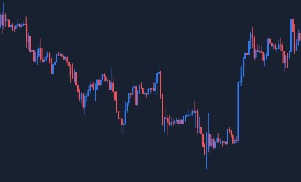
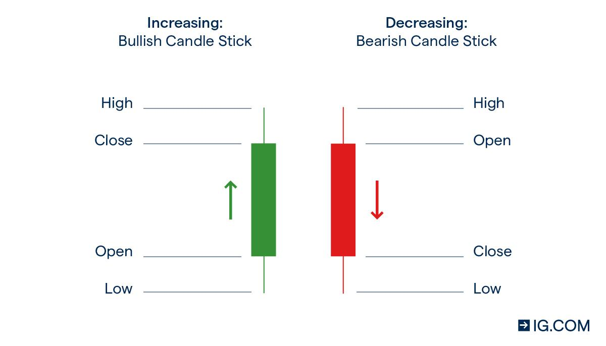

Analyse technique
L'analyse technique est quelque chose qui doit être absolument maîtrisé.
Mais c'est quoi l'analyse technique ?
L'analyse technique est l'étude des graphiques, ce qui vas nous permettre de trouver un PE(Point d'Entrée) sur un actif choisis.
Les traders n'utilise pas un graphique à ligne basique car il est pauvre en information, à la place, il faut apprendre à lire un graphique en candlestick ! qui est bien plus riche,nous allons donc apprendre à lire ce type de graphique:

(je note ici que le graphique à été pris sur TradingViewqui est LA référence pour effectuer nos analyse technique.
(le type d'actif n'a pas été ici indiqué pour ne pas complexifier l'explication.)
Alors, ça peut faire peur mais en réalité c'est très simple:

(Bullish signifie haussier ainsi que Bearish signifie baissier)
La bougie verte (ou bleu) indique que le prix a augmenter, inversement pour une bougie rouge. avec la photo ci-dessus vous pouvez comprendre comment sa marche, une bougie "s'ouvre", et au bout d'une durée définit (qu'on appel l'unité de temps) elle se ferme. Si le bougie se ferme au dessus du point où elle a commencé, alors le prix à augmenter, inversement pour la bougie rouge
Ajoutons la notion de l'unité de temps, c'est simple, si nous somme sur une UT(unité de temps) de 5min, alors une nouvelle bougie apparaît au niveau de la précédente toute les 5min. Si nous choisissons l'UT journalier (D pour daily), alors chaque bougie vas nous montrer 1 jours de variation du prix. Nous pouvons nous même choisirs l'UT et donc avoir une analyse très complète en partant d'une vue global puis en descendant vers de plus petite UT pour être précis.
Dernier point, nous avons le corps de la bougie, le corps montre où c'est terminé la bougie au bout d'une heure si l'UT été d'une heure par exemple, mais nous avons également des petits battons, que nous appelons "wicks". ces battons nous montre le plus haut point atteint par le prix et le plus bas point atteint par le prix entre l'ouverture et la fermeture de la bougie. Ces informations sont très utile pour analyser en détail ce qui se passe entre les acheteurs et les vendeurs.